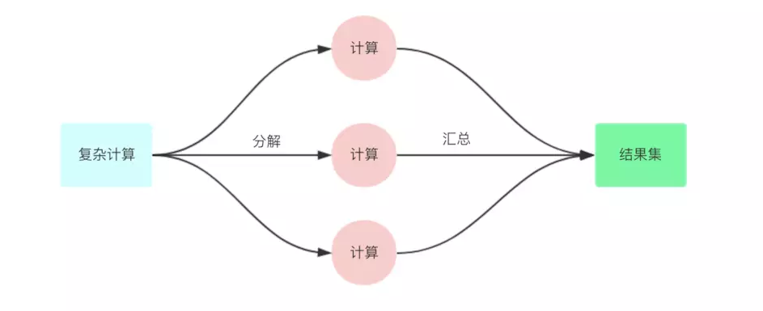

ForkJoin是由JDK1.7后提供多线并发处理框架。ForkJoin的框架的基本思想是分而治之。什么是分而治之？分而治之就是将一个复杂的计算，按照设定的阈值进行分解成多个计算，然后将各个计算结果进行汇总。相应的ForkJoin将复杂的计算当做一个任务。而分解的多个计算则是当做一个子任务。

下面我们以计算一个长度为一个亿的随机数整数数组为例来展示一下ForkJoin的使用：
1.创建Task
使用ForkJoin框架，需要创建一个ForkJoin的任务，而ForkJoinTask是一个抽象类，我们不需要去继承ForkJoinTask进行使用。因为ForkJoin框架为我们提供了RecursiveAction和RecursiveTask（子任务有返回值）。我们只需要继承ForkJoin为我们提供的抽象类的其中一个并且实现compute方法。
private static class SumTask extends RecursiveTask<Integer>{
//设定计算长度的阈值为总长度的十分之一也就是一千万
private final static int THRESHOLD = MakeArray.ARRAY_LENGTH/10;
private int[] src; //表示我们要实际统计的数组
private int fromIndex;//开始统计的下标
private int toIndex;//统计到哪里结束的下标
public SumTask(int[] src, int fromIndex, int toIndex) {
this.src = src;
this.fromIndex = fromIndex;
this.toIndex = toIndex;
}
@Override
protected Integer compute() {
//计算长度如果小于设定长度就不需要分解任务
if(toIndex-fromIndex < THRESHOLD) {
int count = 0;
for(int i=fromIndex;i<=toIndex;i++) {
count = count + src[i];
}
return count;
}else {
int mid = (fromIndex+toIndex)/2;
SumTask left = new SumTask(src,fromIndex,mid);
SumTask right = new SumTask(src,mid+1,toIndex);
//将任务进行拆分
invokeAll(left,right);
//连接返回结果
return left.join()+right.join();
}
}
}2.使用ForkJoinPool进行执行
task要通过ForkJoinPool来执行，分割的子任务也会添加到当前工作线程的双端队列中，进入队列的头部。当一个工作线程中没有任务时，会从其他工作线程的队列尾部获取一个任务(工作窃取)。
public static void main(String[] args) {
ForkJoinPool pool = new ForkJoinPool();
int[] src = MakeArray.makeArray();
SumTask innerFind = new SumTask(src,0,src.length-1);
long start = System.currentTimeMillis();
pool.invoke(innerFind);//同步调用
} 使用ForkJoin将相同的计算任务通过多线程的进行执行。从而能提高数据的计算速度。在google的中的大数据处理框架mapreduce就通过类似ForkJoin的思想。通过多线程提高大数据的处理。但是我们需要注意：